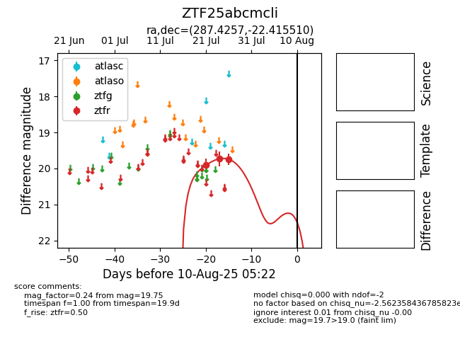

Target ZTF25abcmcli at 2025-08-10 05:22, see:
FINK: fink-portal.org/ZTF25abcmcli
Lasair: lasair-ztf.lsst.ac.uk/objects/ZTF25abcmcli
ALeRCE: alerce.online/object/ZTF25abcmcli
alt names
ZTF25abcmcli (ztf,fink)
coordinates:
equatorial (ra, dec) = (287.4257,-22.41551)
galactic (l, b) = (14.5730,-13.84972)
photometry
last ztfr=19.75
3 ztfr detections
